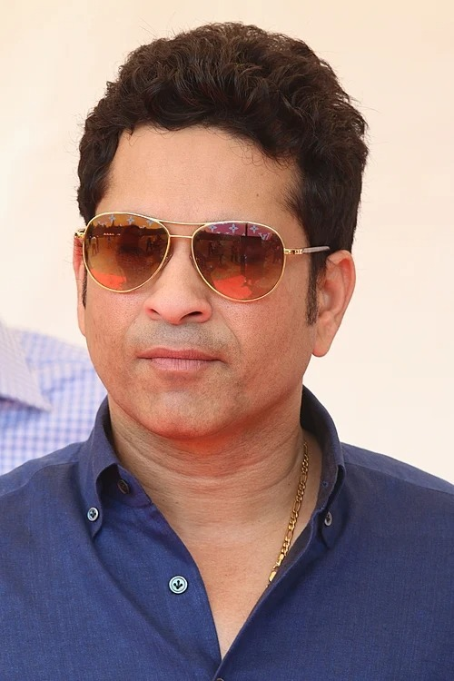
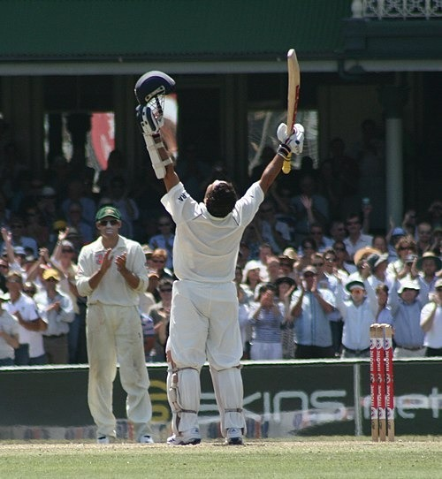

Sachin Tendulkar

Sachin Ramesh Tendulkar is a former Indian international cricketer and a former captain of the Indian national team. He is widely regarded as one of the greatest batsmen in the history of cricket.
Tendulkar is the highest run scorer of all time in international cricket. He is the only player to have scored one hundred international centuries.
Career
Tendulkar was selected for the Indian tour of Pakistan in 1989. He became the youngest player to debut for India in Test cricket at the age of 16.
He made his Test debut against Pakistan in Karachi in November 1989. He continued playing despite facing the strong Pakistani pace attack.
Performance Dip

During this period, Tendulkar faced one of the longest stretches of his career without a Test century. However, he continued to perform and remained one of the most important players for India.
In 2007, Tendulkar became the third cricketer to complete 11,000 Test runs. He continued to create many records during his international career.
2011–12: World Cup Win and Final Years
From February to April, Bangladesh, India and Sri Lanka hosted the 2011 World Cup. Tendulkar was India's leading run-scorer in the tournament.
India defeated Sri Lanka in the final. Winning the World Cup was considered one of the proudest moments of Tendulkar's life.